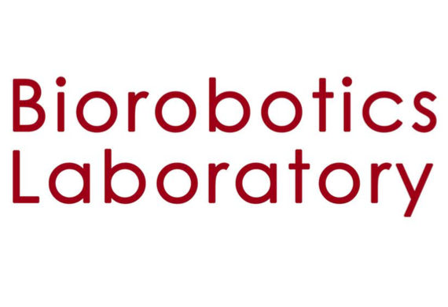
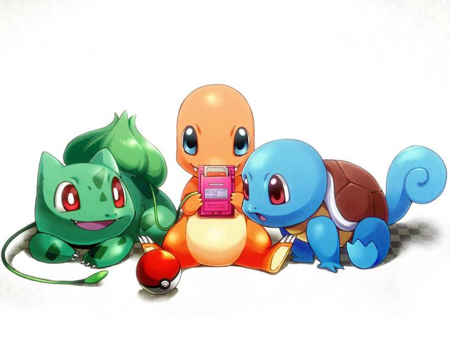
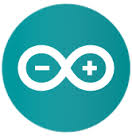
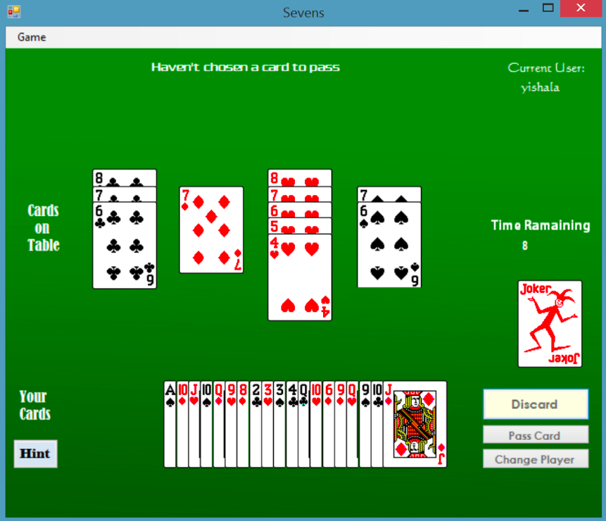
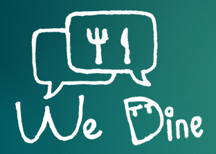

Sha YI (Yisha)
伊莎
Passionate learner and traveler. Interested in robotics, human-computer interaction, and all kinds of cool staff. Enjoy traveling and exploring new places.
I hope to use technology to help people from unprivileged background and build things that may push the human civilization forward ☻
| Email: | yswhynot@gmail.com |
| Phone: | +852 6670-4123 / +86 1352-081-4551 / +1 412-888-6747 |
| Mar. 2013 - Current | Bachelor of Engineering (Honors) in Electronic and Information Engineering |
| The Hong Kong Polytechnic University | |
| GPA: 3.87/4.0 | |
| Sep. 2012 - Feb. 2013 | Bachelor of Science (Honors) in Applied Biology with Biotechnology |
| The Hong Kong Polytechnic University | |
| Sep. 2014 - Dec. 2014 | Engineering Exchange Program |
| University of Waterloo |
| Jun. 2016 - Aug. 2016 | Robotics Institute Summer Scholar, Carnegie Mellon University | |
| Biorobotics Lab | ||
| Developed Visual Odometry for multiple robots in the lab including snakes, snake monster (6 leg spider-like walking robot), and wheeled robot. Made use of the ORB-SLAM algorithm for development. | ||
| Jan. 2016 - Mar. 2016 | Software Development Internship, RavenTech |  |
| Web Development Group | ||
| - Frontend development with ejs, CSS3, javascript - Backend development with Node.js, with express framework |
||
| July 2015 - Dec. 2015 | Software Engineer Internship, Microsoft Asia Research and Development | |
| Platform and Tools Group, Cloud and Enterprise Division | ||
| Researched on applications of agricultural big data. Developed the Android Bluetooth application and conducted backend programming with Python, interacting with MongoDB. Developed distributed web crawling system with popular open-source crawlers including Nutch and Scrapy, which is intergrated with Hadoop and HBase. Also developed application of WPF for demonstration. |
|
Summer 2016
Visual Odometry
Robotics Institute, Carnegie Mellon University Implemented Visual Odometry system and modified the SLAM system based on ORB-SLAM. Source code could be found here. A documentation for the system could be found here. The pdf for the poster demonstration could be found here. |
 |
|
Summer 2014
WiFi Controlled Model Car
Industrial Centre, The Hong Kong Polytechnic University Developed Android-based remote-controlled model car. Responsible for PCB design and fabrication, MCU programming with MPLAB, final demonstration website design, Android application. Assisted with the casing design using Solidworks. We call our model car Syzz Tank, as the short hand of the names our four team members. The functionalities of the Syzz Tank include:
|

|
|
Apr. 2015
Online Pokemon House
Web Application Course Project, The Hong Kong Polytechnic University Built the web database application of raising Pokemon online, with HTML, Javascript, CSS, and jQuery as front end, PHP and mySQL as back end. The application allows users to:
|
 |
|
Sep. 2014
Home Automation System
Hackathon of Hack the North, University of Waterloo Designed a home automation system monitored by Arduino and Spark processor. Responsible for MCU programming, circuit design, and UI design. Project could be find here: github link |
|
Jun. 2014
Water Testing Device
Service Trip, Indonesia Developed a water testing device with Arduino and simple circuit, which determined the water pollution level by calculating the conductivity of water fluid. |
 |
|
Apr. 2014
Desktop Poker Game
C++ Course Project, The Hong Kong Polytechnic University Windows desktop application of poker game "Sevens", using C++ and .NET Framework. The game is designed with two modes: human-computer and human-human mode. The game could:
|
 |
|
May 2015
Object Recognition Project
Just for fun Wrote a simple furniture recognition project with Haar Classifier and OpenCV. |

|
|
Feb 2015
WeDine iOS Application
Micro Fund for Innovation & Entrepreneurship, Hong Kong Started building an iOS appliction that, enables users to schedule dinner or gathering together. Responsible for database design and programming. Also involved in designing business model with students from Finance major. |
 |
| Programming Language | Basic: PHP, Javascript, C#, Objective-C |
| Intermediate: sql, C++, C, Java, Python, MATLAB, Node.js | |
| Databases | mysql, MongoDB |
| Operating System | Linux(Ubuntu), MacOS, Windows |
| Software | Microsoft Office, Adobe Photoshop, PowerBI, Autocad, Solidworks |
| Hardware | Circuit design, PCB fabrication |
| Others | Arduino, Nutch, Scrapy, Hadoop, Android, OpenCV, Latex |
Chinese/Mandarin (native), English (fluent), Chinese/Cantonese (fluent)
| Apr. 2015 | Best GPA Award (2013/14, 2014/15 Academic Year) (Top 3 among 80) |
| May 2015 | HKSAR Government Scholarship (80,000 HKD per year) |
| Oct. 2014 | The Professional Validation Council of Hong Kong Industries Scholarship |
| Oct. 2011 | First Award in National Olympiad in Mathematics in Provinces (Top 0.1%) |